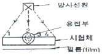
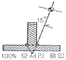
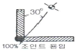
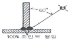
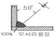
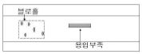

방사선비파괴검사기능사 (2007-09-16 기출문제)
1과목: 방사선투과시험법
1. 형광침투탐상 시험에 대한 설명 중 옳은 것은?
- 밝은 실내에서 적용한다.
- 일반적인 검사체의 표면온도는 5 ~ 57℃에서 적용한다.
- 현상제를 적용한 후 즉시 관찰한다.
- 어두운 곳에서 자외선 조사등을 켜고 조사한다.
(정답률: 알수없음)

2. 두께 14mm 인 시험체를 선원 필름간 거리 60cm 관전압 200kVp 노출량 4mAㆍmin 로 촬영하여 사진농도 2.5 의 양질의 사진을 얻었다면 다른 조건은 변하지 않고 선원 필름간 거리만 90cm로 늘렸을 때 같은 농도의 사진을 얻으려면 노출량은 얼마로 조정해야 하는가?
- 2.7mAㆍmin
- 6.0mAㆍmin
- 9.0mAㆍmin
- 12.0mAㆍmin
(정답률: 알수없음)
3. 방사선 투과사진 필름 현상시 현상 용액에 보충액을 보충하는 이유로 가장 옳은 것은?
- 현상액의 산화를 촉진시키기 위함이다.
- 현상능력을 일정하게 유지하기 위함이다.
- 현상액의 형광 성능을 강화하기 위함이다.
- 현상능력을 촉진시켜 현상시간을 줄이기 위함이다.
(정답률: 알수없음)
4. 30Ci 선원을 이용하여 선원과 필름 사이 거리를 100cm로 하여 20분 동안 노출을 주어 투과사진을 얻었다 50Ci를 이용하여 선원과 필름사이 거리를 200cm 로 하여 동일한 상질의 투과사진을 얻기 위하여 적용해야 할 노출시간은 얼마인가?
- 12분
- 24분
- 36분
- 48분
(정답률: 알수없음)
5. X선 발생장치의 주요 구성 3요소로 옳은 것은?
- X선관, 고전압 발생기, 제어기
- X선관, 필라멘트, 정류기
- 표적(타게트), 제어기, 라디에이터
- 표적(타게트), 전류 제어기, 조리개
(정답률: 알수없음)
6. 방사선투과시험에서 촬영된 필름 상에 텅스텐 개재물이 발생되었다면 이는 용접 방법에 의해 나타난 것으로 추정되는가?
- GTAW(TIG용접)
- SMAW(피복아트용접)
- GMAW(가스금속아크용접)
- FCAW(플럭스코어아크용접)
(정답률: 알수없음)
7. 방사선투과시험에서 노출도표를 작성하여 사용할 경우 고정되는 조건이 아닌 것은?
- 기준이 된 농도
- 현상조건
- 사용된 X선 장치
- 투과 도계
(정답률: 알수없음)
8. 어느 X선에 대한 물질의 반가층(h)이 3.0mm일 때 선흡계수는 얼마인가?
- 0.693/cm
- 0.693/mm
- 0.231/cm
- 0.231/mm
(정답률: 알수없음)
9. 감마선 조사기의 피그테일과 원격조작 장치내의 케이블과의 연결부분을 측정하는 기구는?
- 마이크로미터
- 버니어 캘리퍼스
- 콘
- No-Go 게이지
(정답률: 알수없음)
10. 방사선투과사진 상에 새발자국 모양의 무늬가 나타나다. 이의 현상 원인으로 가장 적합한 것은?
- 과노출 및 과현상
- 정전기 현상
- 촬영전의 광노출 현상
- 현상 전 정착액이 국부적으로 묻었을 때 생기는 현상
(정답률: 알수없음)
11. 중성자수는 동일하나 원자 번호 질량수가 다른 핵종을 무엇이라 하는가?
- 동위원소
- 동중성자핵
- 동중핵
- 핵이성체
(정답률: 알수없음)
12. 코발트(Co-60)의 반감기로 옳은 것은?(오류 신고가 접수된 문제입니다. 반드시 정답과 해설을 확인하시기 바랍니다.)
- 약 75일
- 약 125일
- 약 5.3년
- 약 30년
(정답률: 알수없음)
13. 그림에서 선형투과도계를 놓을 수 있는 위치로 가장 적절한 곳의 번호는?

- 1
- 2
- 3
- 4
(정답률: 알수없음)
14. 자분탐상시험법 적용의 장점에 대한 설명으로 틀린 것은?
- 용접부, 기계가공품 등의 결함검사에 사용된다.
- 철강재료의 터짐 등 표면결함의 검출에 적합하다
- 철강재료 뿐만 아니라 비철재료의 검사도 가능하다.
- 터진것이 벌어져 있지 않은 결합도 검출이 가능하다.
(정답률: 알수없음)
15. 다음중 방사선투과시험의 촬영 조사 각도로 가장 옳은 것은?




(정답률: 알수없음)
16. 방사선투과사진의 판독시 필요한 사항과 거리가 가장 먼 것은?
- 방사선원의 종류 및 특성
- 필름의 특성
- 시험체의 재질 및 형상
- 시험체의 반가층
(정답률: 알수없음)
17. 음파가 한 매질에서 다른 매질로 진행할 때 경계면에서 반사에 영향을 미치는 가장 중요한 인자는 무엇인가?
- 두 매질의 음향 임피던스
- 초음파의 주파수
- 진동자의 압전효과
- 초음파의 속도
(정답률: 알수없음)
18. 다음 중 감마선의 에너지를 나타내는 단위는?
- 큐리
- RBE
- 렌트켄
- MeV
(정답률: 알수없음)
19. 다음 중 방사선투과시험에서 투과사진을 얻기 위한 수동현상처리의 주요 절차로 옳은 것은?
- 현상 - 세척 - 정지 - 정착 - 건조
- 현상 - 정지 - 정착 - 세척 - 건조
- 현상 - 정착 - 세척 - 정지 - 건조
- 현상 - 세척 - 정착 - 정지 - 건조
(정답률: 알수없음)
20. 다음 중 두께 20 mm 인 철판 용접부를 방사선을 사용하여 검사할 때 가장 적합한 선원은?
- lr-192
- Cs-137
- CO-60
- Tm-170
(정답률: 알수없음)
2과목: 방사선안전관리 관련규격
21. 다음 중 방사선 투과시험에 대한 설명으로 틀린 것은?
- 결함의 형상 또는 결함 길이의 정보가 양호하다.
- 체적결함에 대한 검출감도가 우수하다.
- 결함의 깊이를 정확히 측정할 수 있다.
- 건전부와 결함부에 대한 투과선량의 차이에 따라 필름상의 농도차를 이용하는 시험방법이다.
(정답률: 알수없음)
22. 현상처리 된 필름의 저장 방법으로 올바른 설명은?
- 화학증기가 존재하는 곳에 보관하는 것은 무관하다.
- 저장실의 온도와 습도가 자주 변하는 곳에 보관하는 것이 효율적이다.
- 가시광선이 있는 곳에 투과 사진을 보관해서는 안된다.
- 파일에 보관할 때는 많은 양을 한번에 보관하는 것이 효율적이다.
(정답률: 알수없음)
23. 방사선투과시험에서 기하학적 조건으로 나타내는 불선명도를 줄이기 위한 설명 중 옳은 조건은?
- 허용하는 범위 내에서 선원의 크기가 작은 것을 사용한다.
- 허용하는 범위 내에서 선원의 크기는 작고 선원- 물체 사이의 거리도 작게 한다.
- 촬영하는 물체로부터 필름을 가능한 한 멀리한다
- 물체와 선원 사이의 거리는 작게 하고 물체와 필름사이의 거리는 크게 한다.
(정답률: 알수없음)
24. X선관의 구조물에 관한 설명 중 틀린 것은?
- 양극 후드는 극의 수명을 연장해 준다.
- 집속통은 음전자의 확산을 방지하여 준다.
- 창은 X선의 흡수가 적은 물질로 되어있다.
- 실효 초점의 크기는 판촉법으로 측정할 수 있다
(정답률: 알수없음)
25. 선원과 필름간 거리가 60cm 일때 노출시간이 60초 였다. 촬영된 필름의 불선 명도가 좋지 않아 거리를 90cm 로 늘릴 때 다른 조건은 처음 노출때와 같고 단지 노출시간만 변경하는 경우 노출시간은 얼마이어야 하는가?
- 60초
- 120초
- 135초
- 215초
(정답률: 알수없음)
26. 원자력법시행령이 정하는 방사선의 정의에 해당되지 않는 것은?
- 1만 전자 볼트이상의 에너지를 가진 전자선
- 알파선, 중양자선, 양자선, 배타선 기타 중하전입자선
- 중성자선
- 감마선 및 엑스선
(정답률: 알수없음)
27. 강용접 이음부의 방사선투과 시험방법(KS B 0845)에 규정된 계조계에 관한 설명으로 틀린 것은?
- 계조계의 종류에는 15형 20형 25형이있다.
- 계조계의 치수 허용치는 두께에 대해서는 ± 5%로 한다.
- 계조계의 재질은 KS D 0272 에 규정한 STS 304 로 한다.
- 계조계의 치수 허용치는 한변의 길이에 대해서는 ± 0.5mm로한다.
(정답률: 알수없음)
28. 알루미늄 평판 접합 용접부의 방사선투과 시험방법(KS D 0242)에 의거 투과사진의 판정시 시험부의 두께가 20mm 이상 40mm 미만일 때 흠집수로 산정하지 않는 블로홀의 최대 크기는 얼마인가?
- 0.6mm
- 0.8mm
- 1.0mm
- 1.2mm
(정답률: 알수없음)
29. 다음의 방사선 방어용 측정기 중 패용자의 자기 감시가 가능한 것은?
- 필름 배지
- 포켓선량계
- 열형광선량계
- 초자선량계
(정답률: 알수없음)
30. 원자력법령에 의한 원자력이용시설의 방사선 작업 종사자에 대하여 실시하는 건강 진단시 반드시 검사하여야 할 필수 내용으로 나열된 것은?
- 전신 건강 검사
- 백혈구수, 적혈구수
- 대. 소변 검사
- 체중(무게) 검사
(정답률: 알수없음)
31. 강용접 이음부의 방사선투과 시험방법(KS B 0845)에서 투과사진의 시험시야(10 × 10) 내에 제1종 결함의 긴 지름이 2mm 인 것이 1개, 3.5mm 인 것이 2개 있을 때 결함의 분류와 점수로 옳은 것은? (단, 모재의 두께는 20mm 이다.)
- 결함의 분류 : 1류, 점수 : 3점
- 결함의 분류 : 2류, 점수 : 6점
- 결함의 분류 : 3류, 점수 : 10점
- 결함의 분류 : 4류, 점수 : 14점
(정답률: 알수없음)
32. 강용접 이음부의 방사선투과 시험방법(KS B 0845)에 의한 강관 원둘레 용접이음부의 내부필름 촬영방법 중 시험부에서의 가로 갈라짐의 검출을 필요로 하는 경우, 만족하는 시험부의 유효길이는 얼마인가?
- 관의 원둘레 길이의 1/2 이하
- 관의 원둘레 길이의 1/4 이하
- 관의 원둘레 길이의 1/8 이하
- 관의 원둘레 길이의 1/12 이하
(정답률: 알수없음)
33. 비파괴 검사용 화질지시계-원리 및 판정(KS A 4⑤4)의 "02A"에 대한 설명으로 옳은 것은?
- 선의 재질이 스테인리스강이다.
- 알루미늄 용접부에 사용할 수 있는 투과계이다.
- 동일지름의 9개 알루미늄 선으로 되어 있다.
- 알루미늄 재질의 유공형 투과도계이다.
(정답률: 알수없음)
34. 강용접 이음부의 방사선투과 시험방법(KS B 0845)에서 투과사진에 의해 검출된 결함이 제3종인 경우 결함의 분류로 옳은 것은?
- 1류로 한다.
- 2류로 한다.
- 3류로 한다.
- 4류로 한다.
(정답률: 알수없음)
35. 다음 중 5Ci 의 Co-60을 차폐하는데 가장 효과적인 것은?
- 물
- 벽돌
- 납
- 유리
(정답률: 알수없음)
36. 원자력법상 과학기술부장관이 정하는 방사선관리구역 중 1주당 외부방사선량율의 규정으로 옳은 것은?
- 40 마이크로시버트 이상
- 400 마이크로시버트 이상
- 40 밀리시버트 이상
- 400 밀리시버트 이상
(정답률: 알수없음)
37. 그림과 같이 모재두께 24mm 인 강관 용접이음의 투과 사진에 둥근 블로홀이 시험시야 내에 0.5mm 크기로 3개, 1.0mm 크기로 2개, 용입불량이 6mm 크기로 존재한다. 강용접 이음부의 방사선투과 시험방법(KS B 0845)으로 홀 상을 종합 분류하면 몇 류가 되는가?

- 1류
- 2류
- 3류
- 4류
(정답률: 알수없음)
38. 강용접 이음부의 방사선투과 시험방법(KS B 0845)에서 강관의 원둘레 용접이음부 투과사진의 촬영 배치법이 아닌 것은?
- 내부 선원 촬영방법
- 내부 필름 촬영방법
- 2중벽 양면 촬영방법
- 단일벽 단일면 촬영방법
(정답률: 알수없음)
39. 외부 방사선피폭 방어에 대한 3대 원칙이 아닌 것은?
- 방사능이 큰 원소를 사용한다.
- 작업시간을 짧게 한다.
- 가능한 한 거리는 멀리한다.
- 차폐재를 이용한다.
(정답률: 알수없음)
40. 강용접 이음부의 방사선투과 시험방법(KS B 0845)에서 투과사진의 농도가 3.8 일때 사용할 수 있는 관찰기의 휘도 요건으로 옳은 것은?
- 40000cd/m2 이상
- 30000cd/m2 이상
- 10000cd/m2 이하
- 30000cd/m2 미만
(정답률: 알수없음)
3과목: 금속재료일반 및 용접 일반
41. 인터넷에서 주소역할을 하는 이름을 도메인이라 한다. 최상위수준 도메인과 그의미가 일치하는 것은?
- org : 국제기구
- edu : 교육기관
- mil : 웹 관리기관
- gov : 미국연방군사기관
(정답률: 알수없음)
42. 한 사무실이나 공장, 연구소, 학교 등 비교적 가까운 지역 내에 분산 설치되어 있는 컴퓨터, 워크스테이션, 호스트 컴퓨터 등을 상호 접속하여 구성된 근거리 통신망은?
- internet
- MAN
- WAN
- LAN
(정답률: 알수없음)
43. 서로 다른 컴퓨터간에 통신을 담당하기 위한 통신 규약에 속하는 것은?
- URL
- OLE
- CGI
- TCP/IP
(정답률: 알수없음)
44. 다음에 수행할 명령어의 번지를 기억하는 레지스터는?
- 명령 레지스터
- 프로그램 카운터
- 명령 해독기
- 부호기
(정답률: 알수없음)
45. 컴퓨터 운영체제는 제어와 처리 프로그램으로 구성되는데 다음 중 제어 프로그램에 해당하지 않는 것은?
- 감시 프로그램
- 작업 관리 프로그램
- 데이터 관리 프로그램
- 사용자 작성 프로그램
(정답률: 알수없음)
46. 열팽창 계수가 매우 작아 줄자나 표준자 등 불변강으로 쓰이는 것은?
- 인바
- 초경합금
- 스텔라이트
- 스테인리스강
(정답률: 알수없음)
47. 미세한 결정립을 가지고 있으며, 어느 응력하에서 파단에 이르기 까지 수백% 이상의 연신율을 나타내는 합금은?
- 제진합금
- 비정질합금
- 형상기억합금
- 초소성합금
(정답률: 알수없음)
48. 일반적으로 금속을 냉간가공하면 결정입자가 미세화되어 재료가 단단해지는 현상을 무엇이라고 하는가?
- 메짐
- 가공저항
- 가공경화
- 가공연화
(정답률: 알수없음)
49. 주철을 600℃ 이상의 온도에서 가열과 냉각을 반복하면 부피가 증가하여 파열하는데 그 원인으로 틀린 것은?
- 흑연의 시멘타이트화에 의한 팽창
- A1 변태에서 부피 변화로 인한 팽창
- 불균일한 가열로 생기는 균열에 의한 팽창
- 페라이트 중에 고용되어 있는 Si 의 산화에 의한 팽창
(정답률: 알수없음)
50. 산소나 탈산제를 품지 않은 구리로 전도성이 좋고 가공성도 우수하며, 수소 메짐성이 없어 주로 전자기기 등에 사용되는 구리는?
- 전기 구리
- 탈산 구리
- 무산소 구리
- 전해인성 구리
(정답률: 알수없음)
51. 다음 중 동소변태에 대한 설명으로 틀린 것은?
- 결정격자의 변화이다.
- 동소변태에는 A3, A4 변태가 있다.
- 일정한 온도에서 급격히 비연속적으로 일어난다.
- 자기적 성질을 변화시키는 변태이다.
(정답률: 알수없음)
52. Fe-C 평형 상태도에서 공석점의 온도는 약 몇℃ 인가?
- 210
- 723
- 1130
- 1490
(정답률: 알수없음)
53. 강과 주철을 구분하는 탄소의 함유량은 약 몇% 인가?
- 0.1
- 0.5
- 1.0
- 2.0
(정답률: 알수없음)
54. 원자반경이 작은 H, B, C, N 등의 용질원자가 용매원자의 결정격자 사이의 공간에 들어가는 것을 무엇이라 하는가?
- 규칙형 결정체
- 침입형 고용체
- 금속간 화합물
- 기계적 혼합물
(정답률: 알수없음)
55. 금속 재료에 하중을 가하면, 응력이 증가함에 따라 처음에는 변형률이 직선적으로 증가하게 된다. 이구간에서는 응력(σ)과 변형률(ε)사이에 σ = E + ε 라는 관계가 성립한다. 이 식에서 비례상수 E는 무엇을 나타내는가?
- 영률
- 연신률
- 수축률
- 압축률
(정답률: 알수없음)
56. 공석강을 A1 변태점 이상으로 가열하였을 때 얻을 수 있는 조직으로 비자성이며 전기 저항이 크고, 경도가 100-200HV이며, 18-8 스테인리스강의 상온에서도 관찰할 수 있는 조직은?
- 페라이트
- 펄라이트
- 오스테나이트
- 시멘타이트
(정답률: 알수없음)
57. 탄소강의 그라인더 불꽃시험에서 일반적으로 탄소강의 증가에 따라 불꽃의 파열은 어떻게 변화하는가?
- 항상 일정하다.
- 점차 적어진다.
- 점차 많아진다.
- 탄소량에 관계없다.
(정답률: 알수없음)
58. 일반 피복 아크 용접봉의 피복제의 주요 작용을 설명한 것 중 틀린 것은?
- 아크를 안정하게 해준다.
- 용착 금속의 응고와 냉각 속도를 빠르게 한다.
- 용착 금속의 탈산 정련 작용을 한다.
- 용착 금속에 적당한 합금원소를 첨가하여 강도를 증가시킨 준다.
(정답률: 알수없음)
59. 가스용접의 후진법 특징에 대한 설명 중 잘못된 것은?
- 비드 모양이 아름답다.
- 열 이용률이 좋다.
- 용접 변형이 작다.
- 용접부의 산화가 작다.
(정답률: 알수없음)
60. 테르밋 용접에서 테르밋은 무엇과 무엇의 혼합물인가?
- 붕사와 붕산의 분말
- 알루미늄과 산화철의 분말
- 알루미늄과 마그네슘의 분말
- 규소와 납의 분말
(정답률: 알수없음)